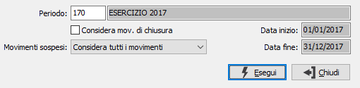

Generazione valori
Il programma esegue la lettura dei movimenti contabili compresi nel periodo richiesto e crea le totalizzazioni sulla base dei codici contenuti nelle anagrafiche del piano dei conti di riferimento.
Il successivo programma “Generazione voci di bilancio” provvederà ad una adeguata assegnazione alle voci di bilancio dei valori qui calcolati.
Accedendo al programma appare la seguente finestra video:

PERIODO: inserire il periodo per cui si desidera elaborare i movimenti contabili, l'inserimento del periodo determina la valorizzazione delle date di elaborazione. Sul campo sono attive le funzioni di ricerca (F9) sulla tabella stessa.
CONSIDERA MOVIMENTI DI CHIUSURA: check box che determina il trattamento dei movimenti di chiusura effettuati con l’apposita causale. L’informazione è utile quando si rielaborano bilanci relativi ad esercizi già chiusi, per escludere le scritture di chiusura di esercizio che determinerebbero il saldo a zero di tutti i conti economici e patrimoniali. Valori possibili:
vuoto = non considera i movimenti di chiusura;
spunta = considera anche i movimenti di chiusura (scelta generalmente priva di logica perché, comprendendo i movimenti di chiusura, il saldo dei sottoconti è zero).
MOVIMENTI SOSPESI: combo box significativo solo per la versione Enterprise che prevede tale tipo di movimenti. Valori ammessi: Considera tutti i movimenti; Escludi i movimenti sospesi; Considera solo i movimenti sospesi.
Ogni nuova elaborazione riferita ad un periodo cancella e sostituisce la precedente, modificando i valori contenuti nell’apposita tabella.